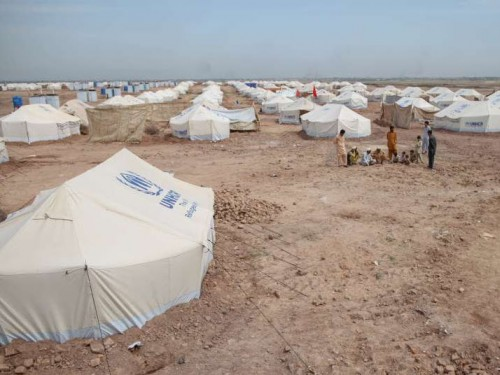
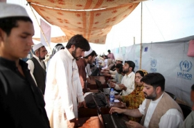

Pakistan: Aid agencies increase help for displaced people in the north-west
3 Apr 2012

New tents have been constructed in Jalozai Camp to accommodate the new arrivals from Khyber Agency. Credit: UNHCR/ T. Irwin
UN agencies offer support to massive influx of displaced people from Khyber Agency.
UN agencies and humanitarian partners are providing aid to a sudden influx of some 123,000 displaced people who have arrived at Jalozai Camp and the surrounding area in Nowshera, north-west Pakistan, since 17 March. Many of these people urgently need food, water, shelter and basic aid.
Those displaced have fled violence in Khyber Agency in the Federally Administered Tribal Areas (FATA). There has been significant population movement in the area since July 2008, and further displacements are anticipated.
The UN Refugee Agency, UNHCR, has registered over 21,000 families who have arrived since mid-January, many of whom are opting to stay off-camp. The agency has asked local authorities to establish additional humanitarian centres to relieve congestion for displaced people outside the camp. Nearly 11,000 families remain in the camp.
In recent weeks, the World Food Programme and partners have distributed more than 8,500 metric tons of food to over 811,000 displaced people throughout the north-west region. The World Health Organization and health partners are providing emergency services and monitoring for disease outbreaks among those displaced. So far, more than 16,000 women and children have been immunized against measles, tetanus and other diseases.
But despite the significant response, many humanitarian needs remain unmet. Humanitarian agencies have appealed for US$424 million to help displaced communities in Nowshera and FATA, but so far only 28 per cent of the funds have been received.
To jump start emergency operations, the UN Central Emergency Response Fund (CERF) recently allocated $26.7 million to provide life-saving aid. The funding will help people in the region who have been displaced since 2008.
“Donor contributions are greatly appreciated, especially the CERF funding which has enabled UN agencies and partners to rapidly respond to the needs of the current influx of displaced people,” said the Humanitarian Coordinator in Pakistan, Timo Pakkala, who visited Jalozai Camp on 30 March.
“However, this funding is only sufficient for aid programmes until June, so we need more funding to meet the immediate needs of displaced families,” he added.
More>> Pakistan Humanitarian Update (Source: Reliefweb)

{kind=link}
{kind=link}